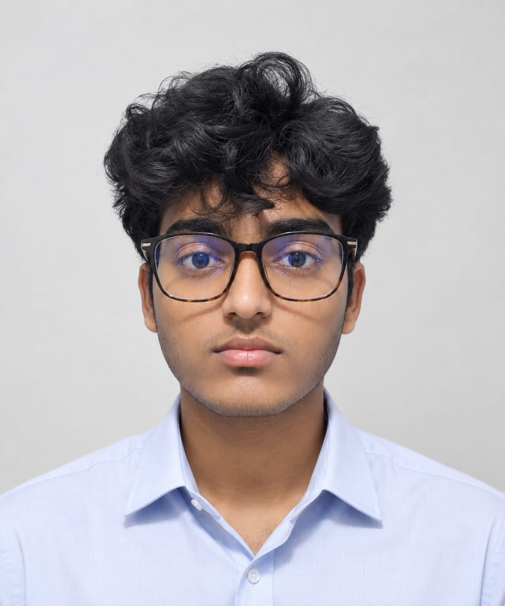

Bachelor of Commerce (Programme)
Undergraduate student building a foundation in commerce and business.
I’m Khem Chand, pursuing B.Com (Programme) at the University of Delhi and the BBA in Digital Business & Entrepreneurship at IIM Bangalore. I’m also an aspiring CA Foundation student, building a strong grounding in commerce while exploring accounting, finance and the role of data in sound business decisions.
Focused on the fundamentals. Curious about what comes next.

GREATER DELHI AREAI’m pursuing commerce at both the University of Delhi and IIM Bangalore while aspiring to progress toward CA Foundation. I’m interested in how accounting, business and careful analysis help organizations make responsible decisions.
My current focus is building the habits and knowledge that matter in professional life: consistency, attention to detail, clear communication and a willingness to keep learning. I’m pursuing B.Com (Programme) at the University of Delhi and the BBA in Digital Business & Entrepreneurship at IIM Bangalore, alongside preparation for CA Foundation and professional learning in data analytics and AI tools.
Aspiring CA Foundation student developing a disciplined approach to professional studies.
Commerce studies at the University of Delhi and IIM Bangalore.
Exploring data analytics and digital tools as complementary skills.
Commerce studies and a clear professional ambition are shaping my learning path.
Undergraduate student building a foundation in commerce and business.
Currently pursuing the BBA DBE programme.
Working toward the foundational stage of the Chartered Accountancy pathway.
A grounded profile for an early-career commerce student: clear about current direction, open about being at the beginning of the journey.
Developing subject knowledge through B.Com studies and CA Foundation preparation.
Introductory exposure through the Deloitte Data Analytics job simulation.
Exploring AI Studio and vibe coding through HCL GUVI learning credentials.
Complementary exposure beyond my core commerce studies.
Deloitte — job simulation credential
HCL GUVI — credential
A space for selected work, experiments and case studies.
Reach out through LinkedIn to say hello or connect professionally.